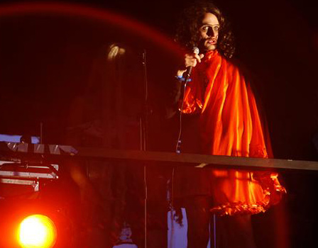

Anmeldelse af G! Mini Festival. Færøerne. Uddrag med Dennis Agerblad og maður:glotti. |

Photo: Beinta Haraldsen - Føroya fyrsta dragshow við Dennis Agerblad
innihelt m.a. eina feita endurútgávu av 200-hittinum "Musxlemanblað"
G! Mini: Minni, meir mergjað, metrosexuellariHóast lítilátna navnið var G! Mini eitt stórt mentannarupplivilse við fleiri frálíkum konsertum. "Bara" føroyskur tónleikur var á skránni, men hóast hetta varðveitti G! alíkavæl sítt altjóða format, m.a. takkað verið feitum DJ-rútmum og fyrsta (almenna) dragshowinum á føroyskari jørð.Jan Lamhauge Brot úr greinin Eg hati at viðganga tað, men Bill Justinussen hevði rætt: 266b bar bara byrjanin. Ikki er nokk við at fólk gavast við at spreiða haturstalu um tey samkyndu, nú er tað faktisk eisini kul at spæla við alt kynsliga úttrykkið. Hetta kundi trygt staðfestast, tá vestmenningurin Dennis Agerblad íklæddur kjóla og høgar hælar spældi eina remix av 200 -hittinum "Musclemanblað". Tað var ein tann feitasta løtan á G! Mini, og slóg við fleiri bátslongdum í kulleika framførsluna nakrar tímar frammanundan, tá áðurnevndi Bill saman við Tobba sang um gleðina at síggja ungdómar boygdar í bøn. Tað var nemmiliga ómetaliga rotið. Vánalig tónleikalig dygd, populistisk skemt, og við sangum "Far lítli útum" og "Eitt ævigt ríkidømi" kundu politikararnir báðir neyvan verið meir forútsigiligir. Tá var meir kreativitetur í framførsluni hjá Dennis Agerblad. Hetta var helst fyrsta almenni dragshowið á føroyskari grund. Saman við sær hevði Dennis Agerblad ein annan gutt í kjóla og brósthaldara, og saman fingu teir ungdómar at rista sína rey til feitar dansirútmur. Tað smakkaði av frælsi... 1,2,3, sting inní! ...Eina aðra forkunnuga framførslu hetta kvøldið átti maður:glotti. Tónleikurin hjá duoini, Ova/Dennis Agerblad og Messell, er gott nokk rættiliga einfaldur, men fólk stuttleikaðu sær óført við at rópa "1,2,3, sting inní!" og "urin". Ikki tí, eg fái mist líka stóra fragd sum ein hvør annar við at siga fúl orð ,men hinvegin tóktist tað mær onkuntíð eitt sundur lættkeypt, hóast skemtið var rættiliga stuttligt... |